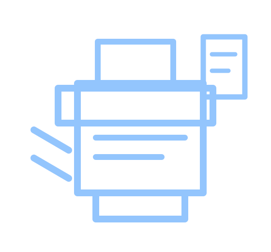
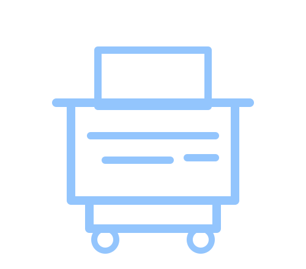

Drum Unit
Komponen penting untuk menjaga kualitas gambar dan hasil cetak tetap tajam.

Sparepart Mesin Fotocopy
Herajaya membantu kebutuhan sparepart fotocopy, jual sparepart mesin fotocopy, sparepart Canon, sparepart Fuji Xerox, dan komponen berkualitas untuk menjaga performa mesin tetap stabil.
Parts & Maintenance
Drum
Cetak stabil
Blade
Hasil bersih
Roller
Paper feed

Kategori Sparepart
Pemilihan sparepart yang tepat membantu menjaga hasil cetak, alur kertas, dan stabilitas mesin.
Komponen penting untuk menjaga kualitas gambar dan hasil cetak tetap tajam.
Membantu menjaga area drum tetap bersih agar hasil cetak tidak mudah bergaris.
Komponen penarik kertas untuk membantu mengurangi paper jam dan miss feed.
Mendukung kestabilan density toner agar hasil cetak lebih merata.
Komponen mekanis untuk menjaga gerakan mesin tetap lancar dan stabil.
Kebutuhan pendukung seperti toner, part perawatan, dan perlengkapan service.
Sparepart Original
Sparepart original dapat menjadi pilihan untuk menjaga stabilitas mesin, terutama pada unit yang membutuhkan standar kompatibilitas lebih presisi.
Konsultasi sparepart Canon sesuai tipe mesin, gejala kerusakan, dan kebutuhan operasional.
Kebutuhan sparepart Fuji Xerox untuk perawatan, perbaikan, dan menjaga kualitas hasil cetak.
Sparepart Berkualitas
Tidak semua kendala membutuhkan penggantian besar. Herajaya membantu memetakan kebutuhan sparepart berdasarkan diagnosa dan gejala mesin.
Pemilihan part disesuaikan dengan brand, model, dan seri mesin fotocopy.
Rekomendasi sparepart mengikuti hasil cetak, error, paper jam, atau penurunan performa.
Bila diperlukan, penggantian dapat dikonsultasikan bersama layanan teknis Herajaya.
FAQ
Herajaya membantu kebutuhan drum, blade, roller, developer, pickup roller, dan komponen lain sesuai kebutuhan mesin.
Ya. Herajaya membantu konsultasi sparepart Canon sesuai tipe mesin dan kondisi pemakaian.
Ya. Herajaya dapat membantu kebutuhan sparepart Fuji Xerox untuk perawatan dan perbaikan mesin fotocopy.
Sesuaikan dengan merek, tipe mesin, gejala kerusakan, volume pemakaian, dan hasil diagnosa teknisi.
Bisa. Anda dapat menghubungi Herajaya via WhatsApp untuk konsultasi kebutuhan sparepart fotocopy.
Sampaikan merek, tipe mesin, dan kendala yang muncul. Tim Herajaya akan membantu mengarahkan pilihan sparepart yang relevan.